La guida completa al beverage Badiani: dai classici della caffetteria italiana al nuovo Matcha Bar,
fino agli Smoothies e le bevande fredde. Include procedure per servizio al tavolo e Take Away (TW).
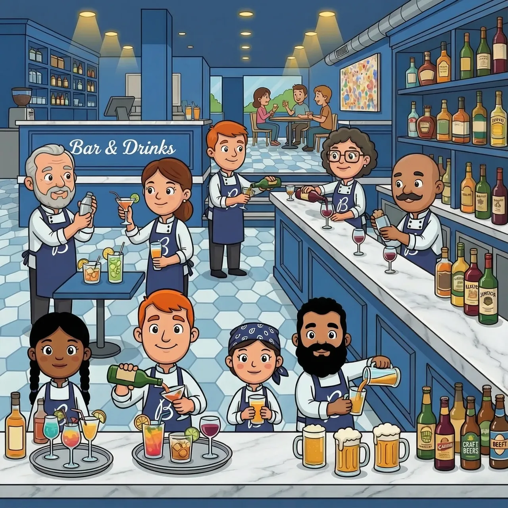
Hot Coffee & British Hot Chocolate
Caffetteria italiana & cioccolata
Single / Double25-30 sec
Espresso Single
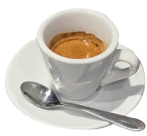
L'essenza del caffè. Estrazione perfetta per un gusto intenso, corpo rotondo e crema persistente.
Acqua: 88-92°C
Pressione: 9 bar
Dose: 1 shot · 7-9 g
Estrazione: 25-30 secondi
Crema: Color nocciola, tigrata, elastica
1 · Flusha la doccetta (flush shower head) per ~2 secondi prima di agganciare il portafiltro.2 · Pulisci e asciuga il portafiltro. Macina la dose al momento.3 · Livella e pressa (tamping) in modo uniforme.4 · Estrai e servi immediatamente (la crema svanisce in fretta).
Doppia dose di energia. Due shot estratti nello stesso tempo per un gusto più ricco.
Acqua: 88-92°C
Pressione: 9 bar
Dose: 2 shot · 14-18 g
Estrazione: 25-30 secondi (flusso costante)
Crema: Spessa e persistente
1 · Flusha la doccetta (flush shower head) per ~2 secondi prima di agganciare il portafiltro.2 · Usa il filtro doppio. Macina dose doppia.3 · Tamping deciso e uniforme.4 · Estrai 2 shot in 25-30s.
?? Take Away (TW)
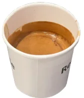
Usa cup 4oz o 8oz a richiesta. Coperchio obbligatorio.
Single ShotMilk Foam
Espresso Macchiato
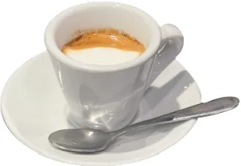
Espresso "macchiato" con una piccola quantità di schiuma di latte calda.
Base: 1 shot espresso
Top: 1-2 cucchiaini di schiuma di latte
Servizio: Tazzina espresso
1 · Prepara un espresso singolo.2 · Monta una piccola quantità di latte (microfoam).3 · Adagia delicatamente la schiuma al centro della crema ("macchia").
?? Take Away (TW)
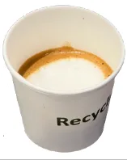
Cup 4oz. La schiuma deve rimanere compatta anche nel trasporto.
Double ShotMilk Foam
Double Macchiato
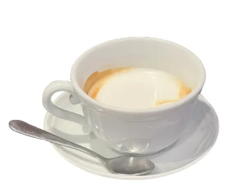
Doppio espresso con una macchia di latte schiumato. più intenso, stesso tocco di latte.
Base: 2 shot espresso
Top: Schiuma di latte (microfoam)
Servizio: Tazza grande o bicchierino
1 · Prepara un doppio espresso.2 · Aggiungi la schiuma di latte al centro.3 · Servi immediatamente.
?? Take Away (TW)
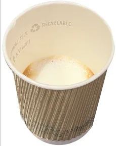
Cup 4oz o 8oz. Mantieni la proporzione caffè/schiuma.
Acqua 2cm dal bordoTW Option
Americano
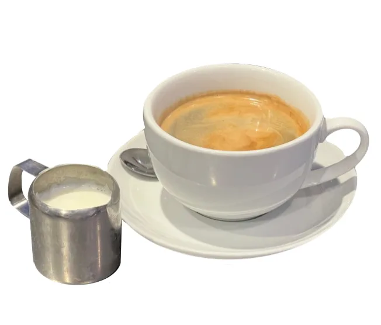
Acqua calda + espresso estratto direttamente in tazza. Disponibile in versione Take Away.
Ricetta single: 8 oz acqua calda
Ricetta double: 12 oz acqua calda
Spazio di sicurezza: lascia 2 cm dalla sommità
1 · Riempi la tazza con acqua calda lasciando 2 cm.2 · Estrai espresso direttamente in tazza o in beaker separato.3 · Servi con piattino e spoon; integra latte a parte su richiesta.
?? Take Away (TW)
Usa cup di carta e sleeve se bollente. Chiudi sempre con coperchio.
??? Pro tip: Americano troppo amaro? Verifica estrazione shot. Se cliente abituale chiede "forte" = doppio shot.
Foam +? volumeTW Option
Cappuccino
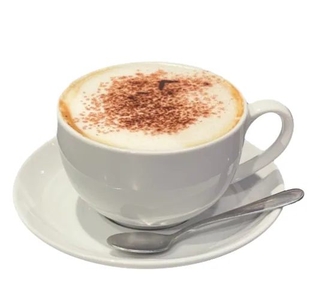
Espresso, latte caldo e schiuma fine. Texture vellutata senza bolle grandi.
Formato: 8 oz (regular) / 12 oz (large)
Foam: circa 1/3 del volume
Temperatura: 65°C (sweet spot)
1 · Espresso in tazza.2 · Stretch 3-5s (aria), poi rolling (vortice) fino a microfoam.3 · Versa controllando la schiuma; chiedi se desidera cacao.
?? Take Away (TW)
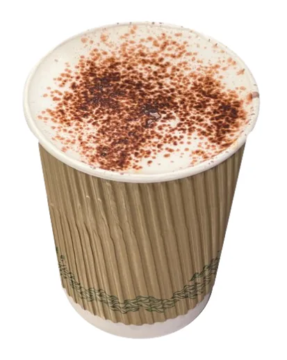
Per il TW, mantieni la stessa qualità della schiuma. Assicura il coperchio saldamente.
??? qualità: Foam perfetto = microbolle, superficie lucida. Mai oltre 70°C.
Doppio shotMicrofoam
Flat White
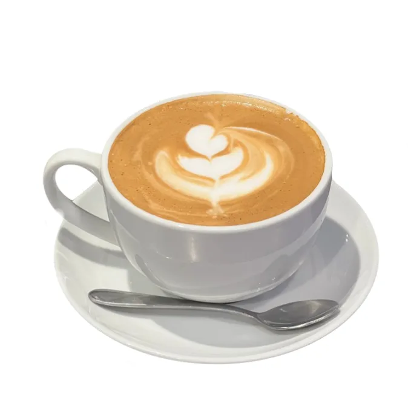
Doppio espresso + latte con microfoam sottilissima. Texture setosa.
Latte: stretch 3 secondi, poi whirlpool.
Temperatura: 65°C.
Versata: inizia alta, poi abbassa per latte art.
1 · Doppio espresso in 8 oz.2 · Monta latte evitando eccesso di aria (microfoam).3 · Versa per texture lucida e uniforme.
?? Take Away (TW)
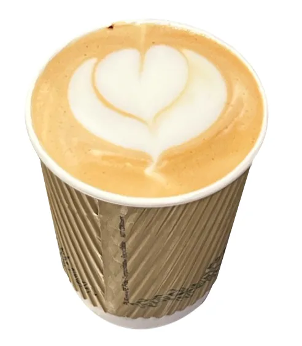
Il Flat White TW richiede la stessa cura nella microfoam. Usa cup 8oz.
Cioccolato + espressoTW Option
Mocha
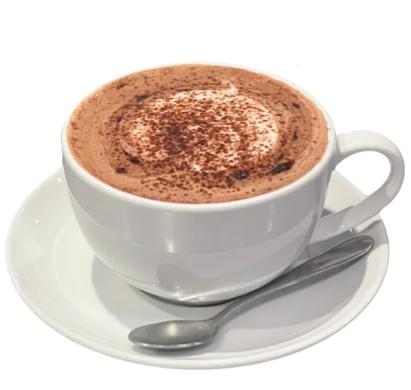
Espresso + cacao + latte. Sciogli prima il cacao nell'espresso.
Shot single
Milk: stretch leggero
Vaso 8 oz
1 · Miscelare espresso e cacao nella tazza.2 · Montare latte come per latte classico.3 · Versare mantenendo il vortice.
?? Take Away (TW)
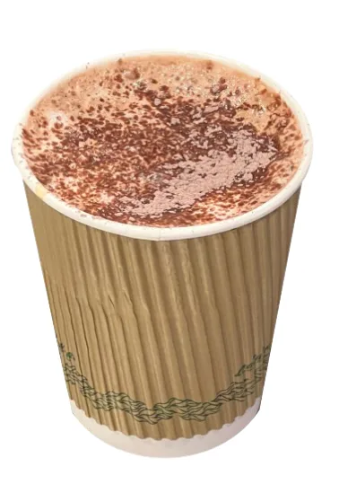
Mescola bene il cacao anche nel cup di carta prima di aggiungere il latte.
Hot chocolateTW Option
Hot Chocolate
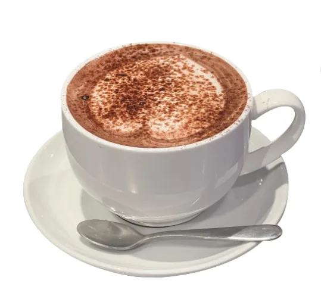
Cioccolata calda cremosa: consistenza liscia, servizio caldo.
Macchina: warm-up 25-30 min prima del servizio
Manopola densità: livello 6 (standard) / 7 (densa)
Temperatura servizio: 65°C
Texture: setosa (zero grumi)
Servizio: cucchiaino + piattino
1 · Accendi la macchina cioccolata 25-30 min prima del servizio (warm-up).2 · Imposta la manopola densità su livello 6 (standard) o 7 (cliente vuole più densa).3 · Mescola/omogeneizza prima di versare.4 · Versa, pulisci bordo tazza, servi con spoon.
?? Take Away (TW)
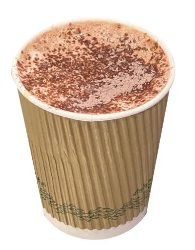
Attenzione alla temperatura per il TW. Assicura bene il coperchio.
Chai 2 pumpDirty option
Chai Latte
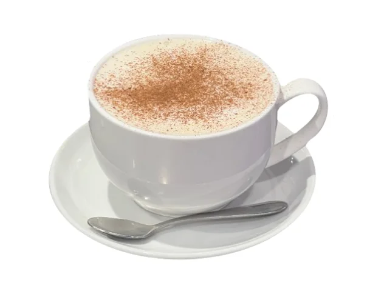
2 pump di sciroppo chai, latte montato lucido e cannella.
Sciroppo: 2 pump
Temperatura latte: 65°C
Finish: cannella (dust leggero)
1 · Eroga lo sciroppo chai in tazza.2 · (Dirty) Estrai 1 shot e mescola con lo sciroppo.3 · Monta latte e versa; finisci con cannella.
Consiglia Dirty Chai a chi vuole spezie + caffeina.
Infusion 3-5 minTW Option
Tea Selection
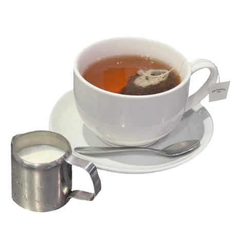
Selezione di tè premium. Servito con teiera e clessidra per infusione perfetta.
Acqua: 90-95°C (Black/Herbal), 80°C (Green)
Infusione: 3-5 minuti
Servizio: Teiera + tazza + latte/limone a parte
1 · Scalda la teiera, inserisci la bustina/filtro.2 · Riempi con acqua alla temperatura corretta.3 · Servi con clessidra e piattino per bustina esausta.
?? Take Away (TW)
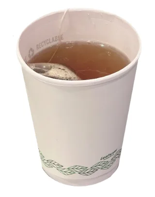
Non riempire fino all'orlo. Chiudi bene e metti sleeve se bollente.
ExperienceSharing
Afternoon Tea Set
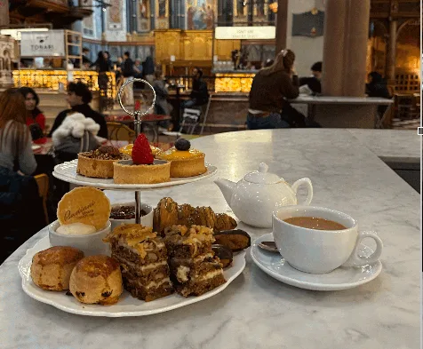
Esperienza premium: 2 citron tart, 1 pecan tart, 1 chocolate tart, 2 mini chocolate eclair, 2 mini sauce croissant + 1 scoop Buontalenti con wafer + tea in teiera.
Pasticcini: 2 citron tart, 1 pecan tart, 1 chocolate tart, 2 mini chocolate eclair, 2 mini sauce croissant
Gelato: 1 scoop Buontalenti + wafer
Condimenti: 1 vaschetta marmellata di fragole
Bevanda: tea in 2 teiere (scelta cliente)
Alzatina: piano alto = leggeri (citron tart, eclair); piano basso = densi (pecan tart, chocolate tart, sauce croissant)
1 · Componi l'alzatina: piano alto pasticcini leggeri (2 citron tart, 2 mini eclair); piano basso pasticcini densi (1 pecan tart, 1 chocolate tart, 2 mini sauce croissant). Disposizione simmetrica.2 · Porziona 1 scoop di Buontalenti in coppetta o piattino e aggiungi un wafer.3 · Riempi 2 teiere col tea scelto dal cliente; preriscalda tazze e teiere.4 · Sul tavolo: alzatina al centro, 2 tazze ceramica + piattini, 2 mini latteranine, zuccheriera, 2 cucchiaini gelato come palette, marmellata di fragole, tovaglioli (posate in legno a richiesta).5 · Presenta il set descrivendo brevemente i componenti e proponi pairing gelato/marmellata.
Gelato 70 gShowtime
Affogato
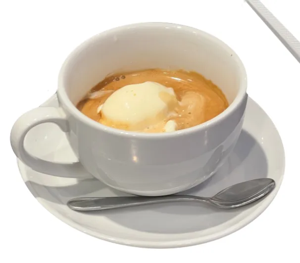
Gelato “annegato” con espresso: servi 1 scoop di Buontalenti e versa un doppio espresso davanti al cliente.
Bicchiere 8 oz raffreddato
Espresso doppio
Servire subito
1 · Pre-raffredda la tazza.2 · Dosare 70 g di Buontalenti.3 · Versa l'espresso davanti al cliente per valorizzare lo show.
?? Take Away (TW)
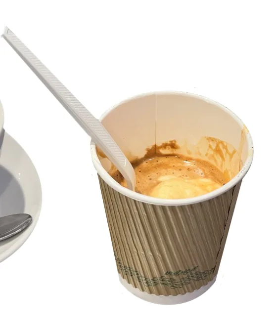
Per il TW, usa la coppetta gelato grande o cup caffè basso. Versa l'espresso sopra prima di chiudere.
Espresso + pannaServire subito
Whipped Coffee
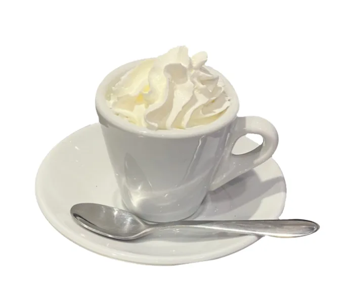
Espresso singolo sormontato da panna montata fresca.
Tazzina 2 oz preriscaldata
Panna montata al momento
Servire con cucchiaino
1 · Prepara espresso singolo.2 · Spruzza panna montata formando una cupola compatta.3 · Servi immediatamente.
PowderSummer version8oz
British Hot Chocolate
Versione estiva (powder) della cioccolata calda. Upsell con whipping cream.
Tazza: 8oz
Acqua: 2oz a fondo tazza
Cioccolato in polvere: 2 cucchiai
Latte: riempi jug fino al beccuccio
Temperatura latte: 65 °C (140 °F)
Procedure1 · Aggiungi 2oz di acqua nella tazza 8oz.2 · Aggiungi 2 cucchiai di polvere di cioccolato e mescola.3 · Riempi la milk jug fino al beccuccio.4 · Stretching: lancia appena sotto la superficie, vapore al massimo, ~3 secondi per montare.5 · Texturing: porta la lancia a metà jug e crea un vortice. Stop a 65 °C.6 · Polish: batti la jug per eliminare le bolle, ruota fino a latte lucido.7 · Pouring: parti lento da 2 pollici e abbassa la jug a metà tazza.
Tips & Tricks: se servito con whipping cream riempi la tazza solo per 3/4: la cioccolata risale subito dopo l'aggiunta della panna.
Matcha Bar
Premium ceremonial matcha
Matcha PremiumLatte Art
Matcha Latte
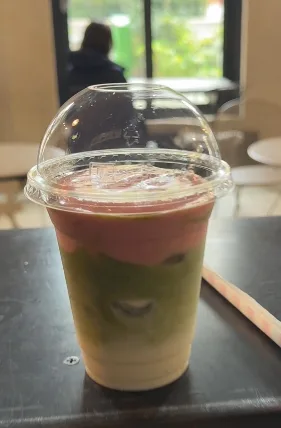
Tè verde Matcha cerimoniale con latte montato. Colore verde brillante e gusto umami.
Small batch (1 porzione): 3 g matcha + 25 ml acqua fredda, setacciato e frustato
Big batch (10 porzioni): 20 g matcha + 250 ml acqua fredda, conservato in salsiera in frigo
Dose drink: 25 ml di matcha premade
Shelf life mix: 1 giorno (incluso giorno di preparazione)
Latte: montato come cappuccino
1 · Usa 25 ml di matcha premade (small batch 3 g + 25 ml acqua fredda OPPURE big batch 20 g + 250 ml acqua fredda già pronto in salsiera).2 · Versa il matcha in tazza.3 · Monta il latte per ottenere una crema setosa.4 · Versa il latte sulla base matcha creando latte art.
Acqua sempre FREDDA per la base (non bollente, brucia il matcha). Setaccia sempre la polvere per evitare grumi. Shelf life mix: 1 giorno.
IcedLayering
Iced Matcha Latte
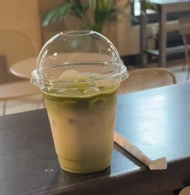
Versione fredda rinfrescante. Matcha versato su latte e ghiaccio per effetto bicolor.
Ghiaccio: riempire il bicchiere
Latte freddo: 3/4 bicchiere
Top: base matcha concentrata
1 · Riempi il bicchiere di ghiaccio e latte freddo.2 · Prepara il matcha concentrato con acqua calda.3 · Versa lentamente il matcha sopra il latte per creare i layer.
DessertGelato
Matcha Affogato
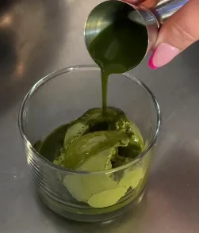
Scoop di gelato Buontalenti affogato con una dose di Matcha cerimoniale caldo.
Gelato: 1 scoop Buontalenti
Matcha: dose standard concentrata
Servizio: versare al tavolo
1 · Prepara la coppetta con lo scoop di gelato.2 · Prepara il matcha caldo in un bricchetto.3 · Servi e versa il matcha verde brillante sul gelato bianco.
FusionEspresso + Matcha
Dirty Matcha
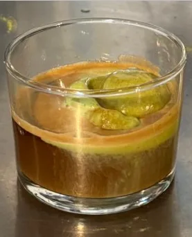
L'incontro tra Oriente e Occidente: Matcha Latte con l'aggiunta di uno shot di espresso.
Base: Matcha Latte (caldo o freddo)
Aggiunta: 1 shot espresso
Profilo: Energizzante e complesso
1 · Prepara un Matcha Latte standard.2 · Estrai uno shot di espresso.3 · Versa l'espresso nel drink (se iced, versa sopra per layering).
Cold Coffee
Iced coffee & signature cold lattes
Iced AmericanoWater + espresso
Iced Americano
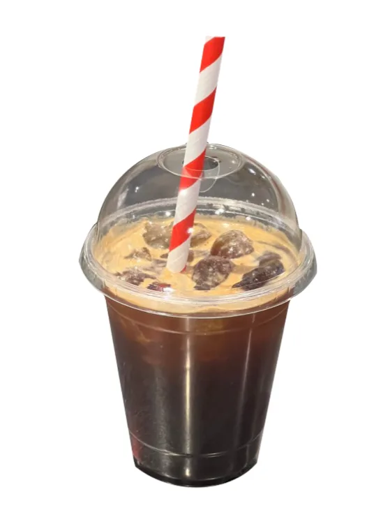
3 cubi grandi di ghiaccio, acqua fredda e doppio espresso versato lentamente.
12 oz cup
Lascia 1/4 spazio
Mix zucchero nello shot
1 · Aggiungi ghiaccio e acqua lasciando spazio.2 · Esegui doppio espresso in tazzina separata.3 · Versa lentamente sopra un cubo per effetto visivo.
Iced LatteMilk show
Iced Latte
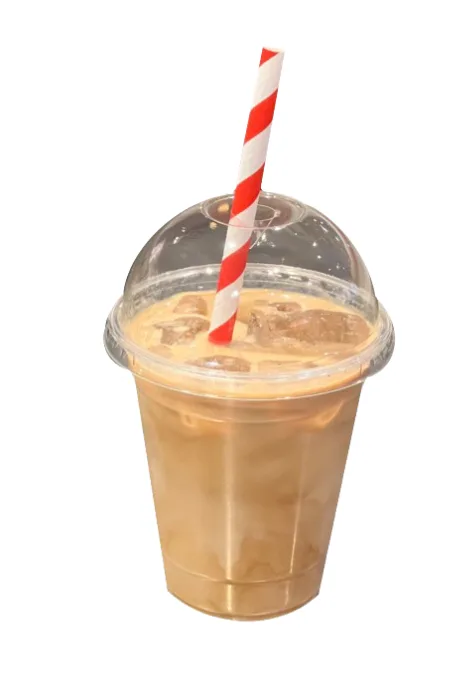
Ghiaccio + latte freddo, doppio espresso versato direttamente sopra creando layering. Mai mescolare con la cannuccia prima di servire.
3 cubi grandi o 9 piccoli (12 oz cup)
Latte freddo fino a 3/4
Zucchero: nello shot e mescola prima di versare
Sciroppo: 2 pump direttamente in tazza dopo il ghiaccio
⚠️ Mai mescolare con la cannuccia prima di servire
1 · Aggiungi 3 cubi grandi (o 9 piccoli) e latte freddo lasciando 1/4 di spazio.2 · Estrai doppio espresso in tazzina 2 oz.3 · Versa lentamente sopra un cubo per effetto "slow motion" del layering.4 · Coperchio + cannuccia, servi senza mescolare.
Pro tip: sciroppo → 2 pump in tazza dopo il ghiaccio; zucchero → sciogli nello shot prima di versare.
Signature icedLayering
Pistachio Iced Latte
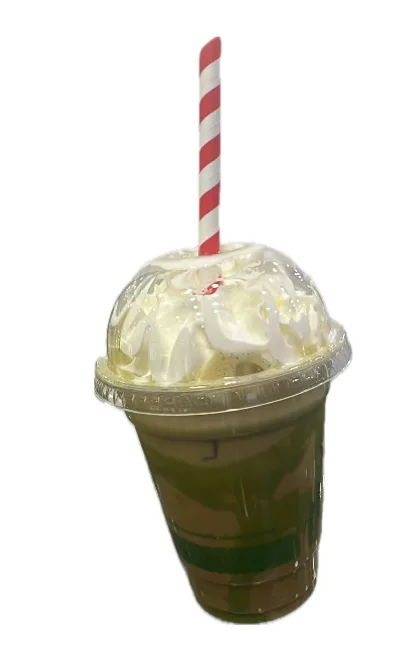
Iced latte signature al pistacchio: salsa pistacchio + espresso doppio + latte freddo + sciroppo vaniglia, mantecati in milkshake maker.
Salsa pistacchio: 30 g (+ 2 swirl in tazza)
Espresso: doppio (2 shot caldi)
Latte: 150 g
Sciroppo vaniglia: 2 pump
Ghiaccio: 3 cubi grandi o 9 piccoli
Mix milkshake maker: 45 secondi
1 · 2 swirl di salsa pistacchio sulle pareti del bicchiere; aggiungi 30 g di salsa sul fondo.2 · Versa nel milkshake maker: 2 shot espresso caldi, 150 g latte, 2 pump sciroppo vaniglia, ghiaccio (3 cubi grandi o 9 piccoli).3 · Mix in milkshake maker per 45 secondi.4 · Versa nel bicchiere mantenendo l’effetto cascade e servi subito con cannuccia.
ColdLa DolcevitaHazelnut
La Dolcevita Iced Latte
Iced latte signature con la salsa La Dolcevita di Paolo Pomposi e sciroppo di nocciola.
Salsa La Dolcevita: 30 g (+ 2 swirl in tazza)
Espresso: doppio (2 shot caldi)
Latte: 150 g
Sciroppo nocciola: 2 pump
Ghiaccio: 3 cubi grandi o 9 piccoli
Mix milkshake maker: 45 secondi
Procedure1 · Aggiungi 2 swirl di salsa La Dolcevita in tazza e riempi con il ghiaccio.2 · Nel milkshake maker: salsa La Dolcevita 30g + 2 shot espresso caldo + 150g latte + 2 pump nocciola, 45 secondi.3 · Versa sopra il ghiaccio e metti il lid.4 · Topping con whipped cream.5 · Cannuccia e servi.
Tips & Tricks: puoi usare più salsa su richiesta, ma ricorda di addebitarla al cliente.
Smoothies & Juices
Frutta, verdura & energia
TropicalVitamin C
Smoothie Giallo Passion
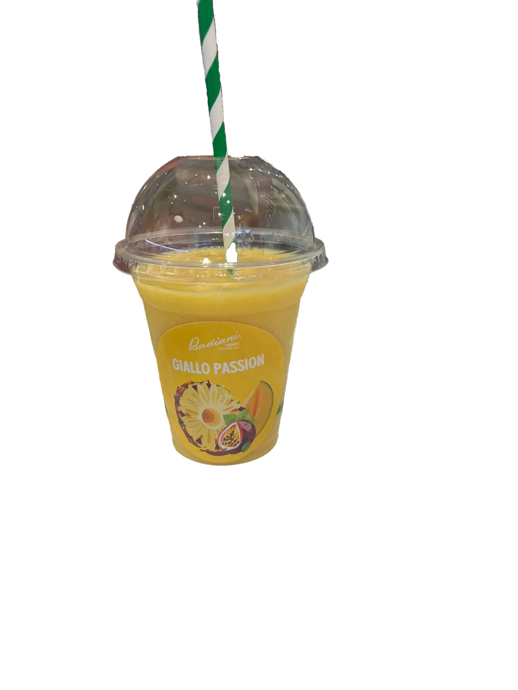
Mix tropicale con mango, ananas e frutto della passione. Colore giallo vibrante.
Base: Succo mela/arancia o acqua cocco
Mix frutta: Giallo pack
Blend: 30 secondi
1 · Versa la base liquida nel blender.2 · Aggiungi il contenuto del pack frutta congelata.3 · Frulla fino a consistenza liscia e servi con cannuccia larga.
AntioxidantBerries
Smoothie Rosso Berry
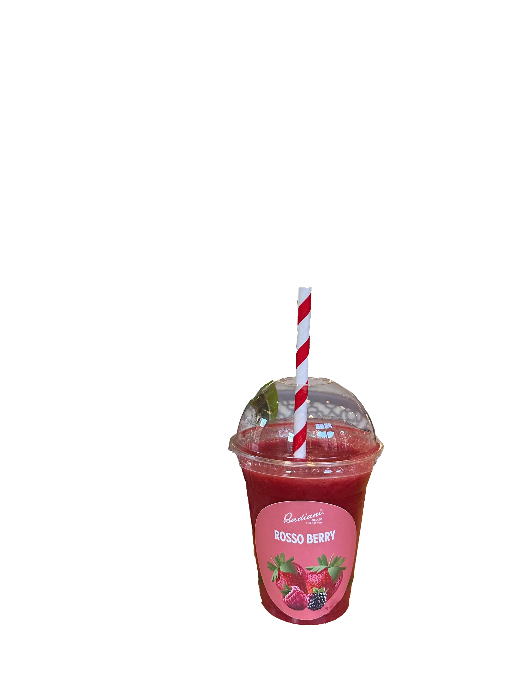
Esplosione di frutti di bosco: fragole, lamponi, mirtilli. Dolce e acidulo.
Base: Succo mela o latte (se richiesto)
Mix frutta: Rosso pack
Blend: 30 secondi
1 · Versa la base liquida nel blender.2 · Aggiungi il contenuto del pack frutta congelata.3 · Frulla fino a consistenza liscia.
DetoxGreen Power
Smoothie Verde Boost
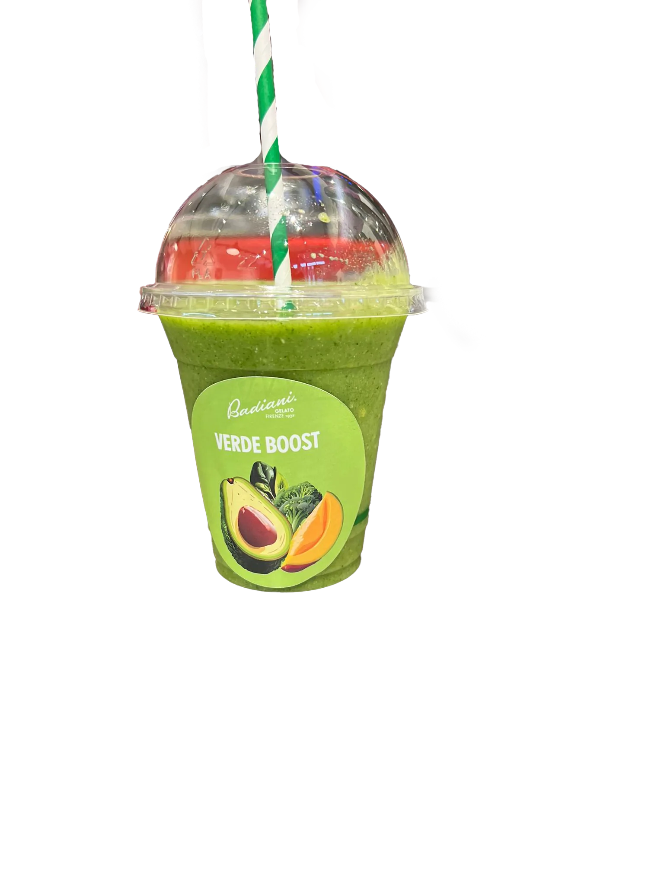
Mix salutare con spinaci, mela verde, cetriolo e zenzero. Fresco e dissetante.
Base: Acqua o succo mela
Mix frutta/verdura: Verde pack
Blend: 30 secondi
1 · Versa la base liquida nel blender.2 · Aggiungi il contenuto del pack verde.3 · Frulla bene per sminuzzare le fibre delle verdure.
Fresh juiceEnergyCitrus & ginger
Energy Booster
Succo fresco a base di carote, arance, limone e zenzero. Boost energetico naturale.
Arance: 3 (sbucciate)
Carote: 2 medie (1 e mezza se grandi)
Limone: 1/2 (sbucciato)
Zenzero: 1 cubo (mezzo pollice)
Servizio: dome lid + cannuccia
Procedure1 · Lava bene tutti gli ingredienti.2 · Sbuccia le 3 arance.3 · Taglia le carote a metà.4 · Sbuccia il mezzo limone.5 · Prepara il cubo di zenzero.6 · Inserisci tutto in sequenza nella juice machine.7 · Servi con dome lid e cannuccia.
Tips & Tricks: prepara al momento per qualità e freschezza. Lo zenzero dà il kick: dosalo in base alla tolleranza del cliente.
Fresh juiceBeetrootBerry
Sweet Beet
Succo fresco a base di barbabietola, mele, fragole e zenzero. Antiossidante e vibrante.
Barbabietola: 1 (tagliata a metà)
Mele: 2 (in 4 parti, no adesivi/semi)
Fragole: 4 (senza foglie)
Zenzero: 1 cubo (mezzo pollice)
Servizio: dome lid + cannuccia
Procedure1 · Lava bene tutti gli ingredienti.2 · Taglia la barbabietola a metà.3 · Taglia le 2 mele in 4, rimuovi adesivi e semi.4 · Pulisci 4 fragole rimuovendo le foglie.5 · Prepara il cubo di zenzero.6 · Inserisci tutto in sequenza nella juice machine.7 · Servi con dome lid e cannuccia.
Tips & Tricks: la barbabietola colora la juice machine: pulisci subito dopo l'uso. Le mele bilanciano il gusto terroso della barbabietola.
Fresh juiceDetoxVeggie
Get Clean
Succo fresco detox a base di sedano, mele e cetriolo. Idratante e digestivo.
Sedano: 2 coste (tagliate a metà)
Mele: 2 (in 4 parti, no adesivi/semi)
Cetriolo: 1 (tagliato a metà)
Servizio: dome lid + cannuccia
Procedure1 · Lava bene tutti gli ingredienti.2 · Taglia 2 coste di sedano a metà.3 · Taglia 2 mele in 4 parti, rimuovi adesivi e semi.4 · Taglia 1 cetriolo a metà.5 · Inserisci tutto in sequenza nella juice machine.6 · Servi con dome lid e cannuccia.
Tips & Tricks: prep dei vegetali a inizio turno per velocizzare il servizio. Il sedano è il più fibroso: spingi con calma nel tubo.
Fresh juice100% OrangeClassic
Orange Juice
Spremuta d'arancia 100% fresca. Classico intramontabile, ricco di vitamina C.
Arance: 4-5 medie per cup standard
Macchina: juicer dedicato (no juice machine)
Servizio: dome lid + cannuccia
Shelf life: consumare entro 30 min dalla spremitura
Procedure1 · Lava le arance e tagliale a metà.2 · Spremi nel juicer dedicato fino al volume target.3 · Versa nella tazza, dome lid + cannuccia.4 · Servi immediatamente.
Tips & Tricks: arance fredde da frigo per un succo più piacevole. Pulisci il juicer ad ogni servizio per evitare ossidazione e sapori amari.
Setup & Conservazione
Apertura · Setting · Dati tecnici · Storage · Chiusura
AperturaSetupChecklist
Routine apertura (coffee station)
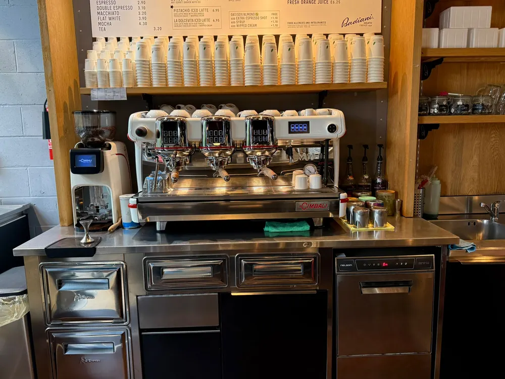
Apertura coffee station: macchina pronta, gruppi caldi, macinino tarato, latte e tazze in posizione. Banco pulito e ordinato prima del primo servizio.
Macchina accesa con gruppi caldi e cup warmer attivo
Macinino tarato per espresso (25-30 secondi su 30 grammi)
Latte freddo pronto e tazze portate in posizione
Banco pulito, attrezzi al loro posto, scorte verificate
1 · Accendi macchina e cup warmer; verifica gruppi caldi.2 · Tara macinino (25-30s/30g) e fai shot di test.3 · Latte freddo pronto, tazze in temperatura, attrezzi puliti.4 · Banco lucido, blue roll a portata, scorte syrup/topping verificate.
Compila l'Opening Checklist Google Form a fine routine.
AperturaMatchaDaily batch
Prep Matcha premade (una volta al giorno)
Prepara il premade matcha una volta al giorno e conservalo in frigo con etichetta. Shelf life: 1 giorno (incluso il giorno di preparazione).
Big batch: acqua fredda + matcha setacciato (no grumi) e whisk fino a liscio
Trasferisci in squeeze bottle di plastica dedicata
Conserva in frigo fino all'uso
1 · Aggiungi acqua fredda nella jug e setaccia il matcha (no lumps).2 · Whisk (manuale o elettrico) finché completamente disciolto.3 · Squeeze bottle + frigo + label (data/ora).
Matcha premade = velocità in rush. Ma dura solo 1 giorno: label sempre.
SettingIced25 ml
Setting Iced Matcha Latte (standard)
Standard di montaggio: ghiaccio ? latte ? matcha (versata lenta). Così ottieni sempre lo stesso effetto e riduci gli errori.
Ice: riempi fino alla linea indicata sul bicchiere
Milk: circa 200 ml (fino alla linea sotto il bordo)
Premade matcha: 25 ml (versato lentamente per creare pattern)
1 · Ice ? milk ? matcha (slow pour).2 · Lid + straw; lascia al cliente la mescolata.3 · (Optional) 1 pump vanilla syrup su richiesta.
Smoothie standard: frozen fruit bag + 250 ml di apple juice, blend veloce, poi sticker colore corretto prima del servizio.
Base: 250 ml apple juice (no added sugars) + frozen fruit bag
Blender: 30 secondi (o finché smooth)
Finish: cup corretta + cannuccia + sticker (pink/green/yellow)
1 · Apri bag frutta, aggiungi nel mixer.2 · Versa 250 ml apple juice e frulla 30s.3 · Cup + straw + sticker corretto prima di servire.
Sticker corretto = zero errori al pass e brand consistency.
ConservazioneFrigo1 giorno
Storage Matcha premade (HACCP)
Il premade matcha ha shelf life 1 giorno (incluso il giorno di preparazione). Conserva sempre in frigo e con label.
Contenitore: squeeze bottle pulita e dedicata
Frigo: sempre (mai banco)
Label: data/ora preparazione + scadenza
1 · Se manca la label: non usare.2 · Se oltre shelf life: elimina e rifai batch.3 · Mantieni utensili asciutti per evitare grumi/contaminazioni.
ChiusuraResetPulizia
Chiusura stazione Matcha / Blender
Routine di fine giornata per ripartire veloci domani: elimina i premade fuori shelf life e lascia strumenti pronti.
Matcha premade: verifica label e scarta se oltre 1 giorno
Blender: rimuovi residui frutta e lava/igienizza secondo standard store
Postazione: wipe e riordino (bottiglie, straw, sticker)
1 · Controlla scadenze e riponi tutto in frigo/freezer corretti.2 · Pulisci e asciuga blender e utensili (niente residui appiccicati).3 · Prepara la stazione per l'apertura: stock e tool in posizione.
Una chiusura fatta bene = 10 minuti risparmiati domani mattina.